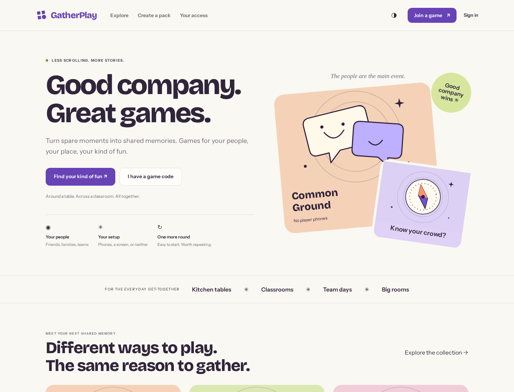
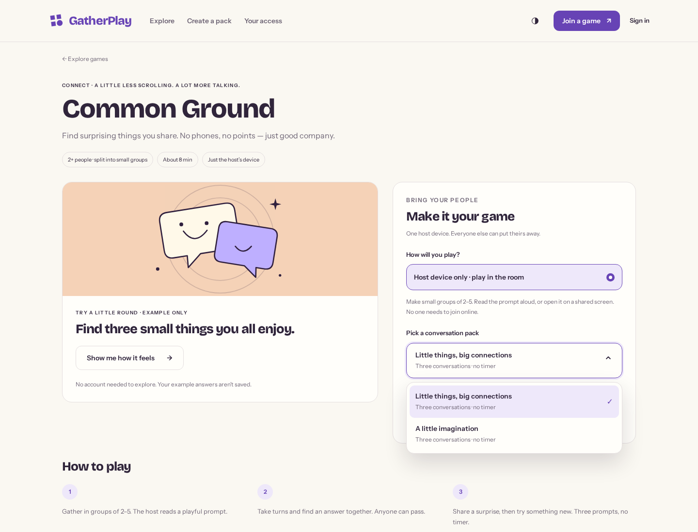
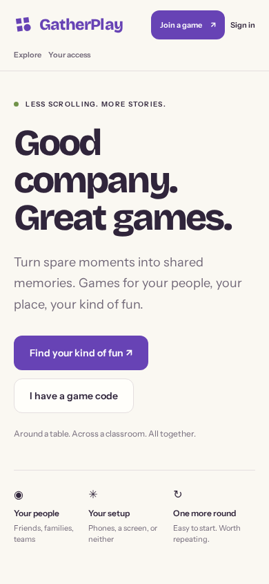
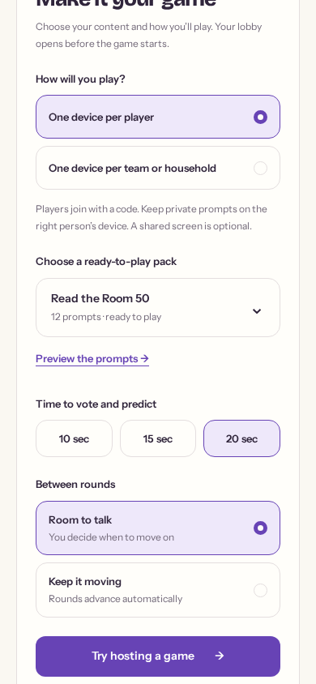
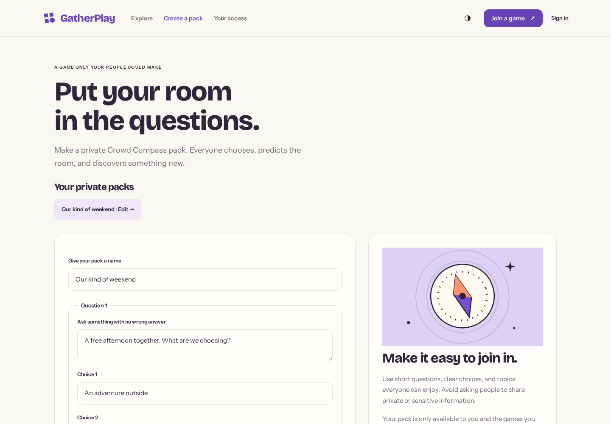
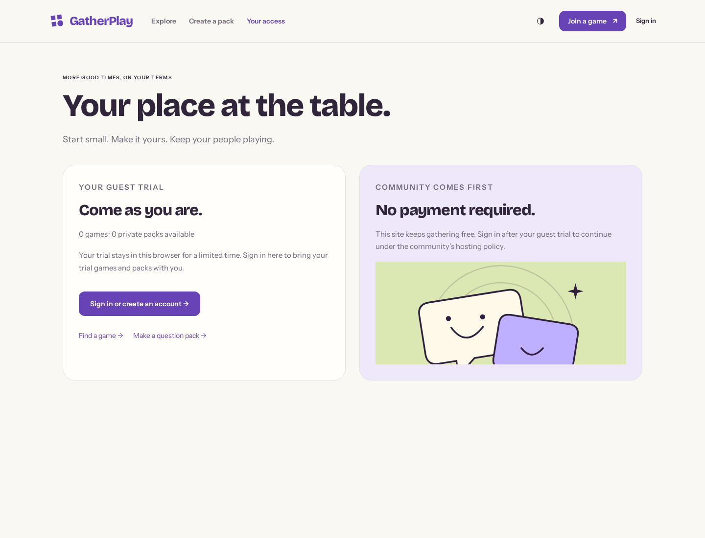
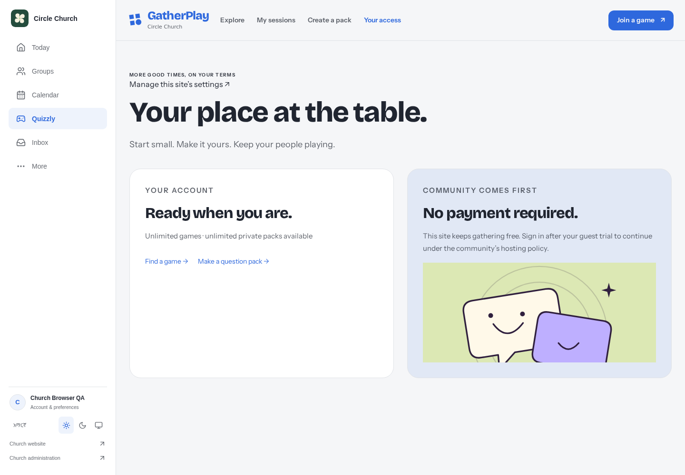

A more open door.
A clearer way to play.
Site-controlled guest trials, private creation, optional reviewed payments and a warmer introduction to gathering. The community site stays free.
An invitation with its own identity

Controls that belong to the product
See the preceding setup with native selects →


Mobile landing.
Participation, pack and pacing controls.Your questions, your people

Access explained where it matters

The complete guest journey
A real browser session: select a pack, host and finish a cooperative game, make a private question pack, see the trial limits, and recover from offline navigation. No real payment or participant data is recorded.
Still part of the host community

The existing identity and theme bridge is preserved. Installation prompts are suppressed inside the iframe.